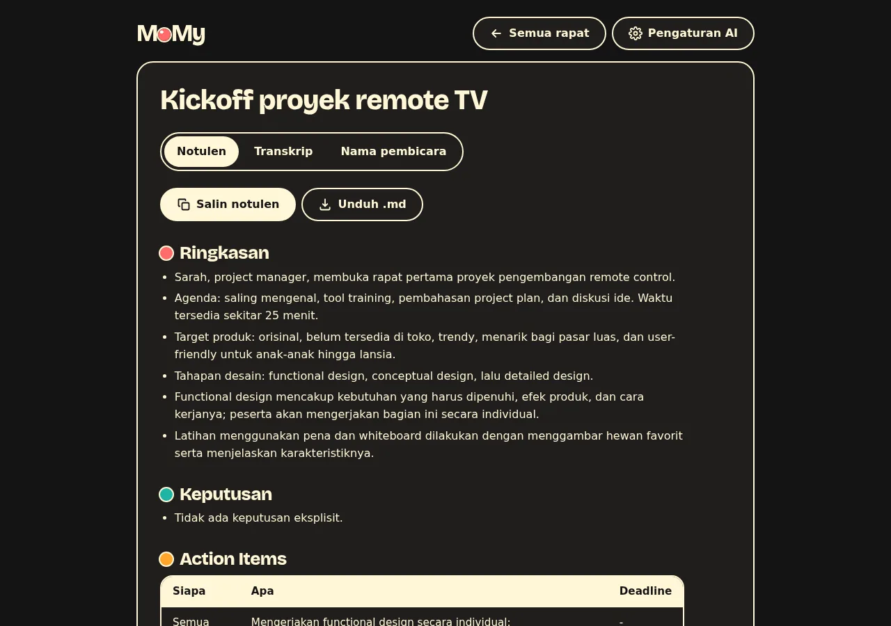
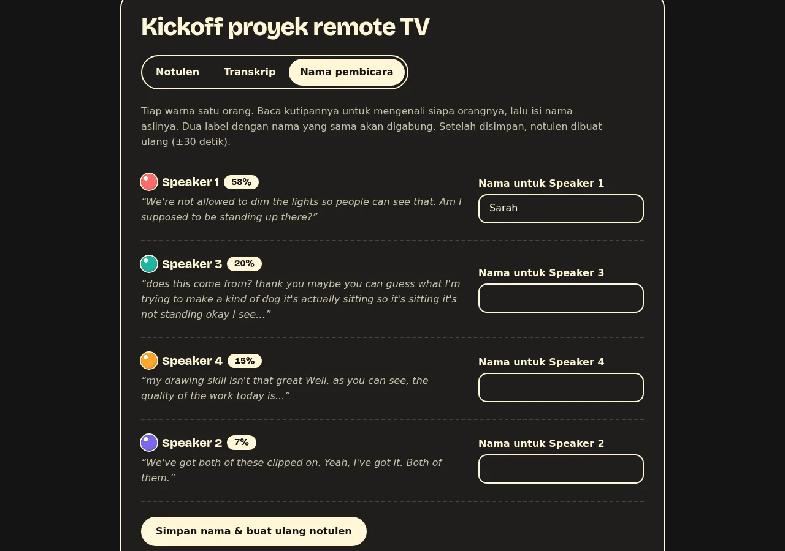
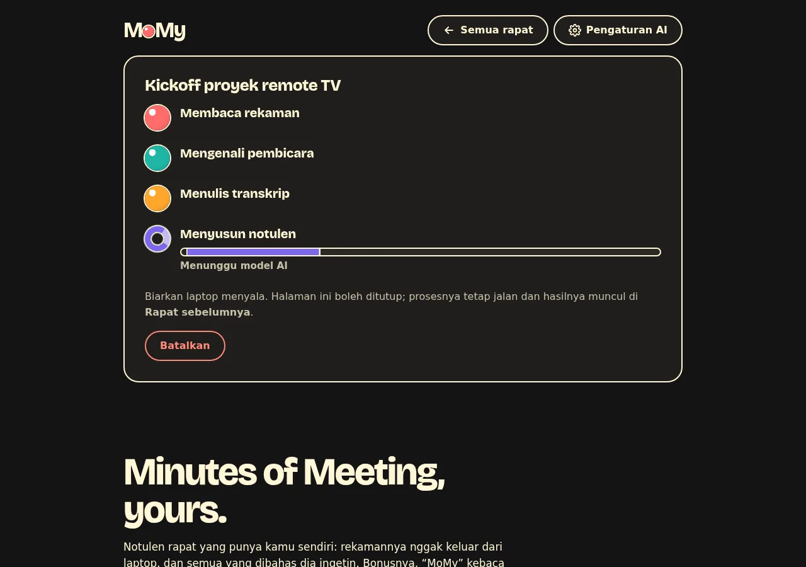

MMy
Ingat semua yang dibahas, biar kamu nggak perlu.
Rekaman rapat jadi transkrip per pembicara dan notulen lengkap: ringkasan, keputusan, siapa mengerjakan apa. Di laptopmu sendiri, gratis, open source.
MoMy = Minutes of Meeting, yours.

Dari rekaman ke notulen, tanpa ngetik
Tiga langkah. Yang kamu lakukan cuma langkah pertama.
1. Tarik rekamannya
File dari Zoom, Google Meet, atau rekaman HP: mp4, m4a, mp3, wav, webm.
2. MoMy mendengarkan
Memisahkan siapa bicara kapan, lalu menulis transkrip lengkap dengan jamnya. Bahasa Indonesia campur English aman.
3. Notulen jadi
Ringkasan, keputusan, action items (siapa, apa, deadline), dan topik yang belum selesai. Tinggal salin ke WhatsApp atau email.
Kenapa MoMy
Notulen rapat yang punya kamu sendiri.
Tiap orang satu warna
Pembicara dipisah otomatis. Ganti “Speaker 3” dengan nama aslinya, notulennya ditulis ulang dalam sekitar 30 detik.
Rekamanmu nggak ke mana-mana
Suara dan pembicara diproses di laptop. Pakai Ollama dan semuanya offline. Pakai AI online, yang dikirim cuma teks transkripnya, dan aplikasi menulis jelas ke mana.
AI pilihanmu
Model gratis di laptop lewat Ollama, atau layanan apa pun yang punya API mirip OpenAI. Diatur dari tombol Pengaturan AI.
Open source, lisensi MIT
Kodenya terbuka. Boleh dipakai, diubah, dan dibagikan, untuk pribadi maupun kantor.


Pasang MoMy
Butuh laptop dengan RAM 8 GB dan ruang kosong sekitar 3 GB untuk model, yang diunduh sekali saat pertama dipakai. Tanpa kartu grafis pun jalan.
Linux dan macOS
curl -fsSL https://momy.stevenmarp.xyz/install.sh | shLalu buka MoMy dari menu aplikasi, atau ketik momy-ui.
Model AI untuk menulis notulen
- Gratis dan offline: pasang Ollama, lalu jalankan
ollama pull gemma3:4b. Paling privat, tapi butuh laptop yang cukup kuat. - Gratis tanpa pasang apa-apa: ambil API key di Google AI Studio, lalu klik Pakai Gemini (gratis) di Pengaturan AI. Notulen jadi dalam hitungan detik; teks transkripnya dikirim ke Google.
- Atau layanan AI lain yang punya API mirip OpenAI: isi alamat API, nama model, dan API key di Pengaturan AI.
Windows
Belum diuji. Kalau mau mencoba: pasang uv, lalu jalankan uv tool install git+https://github.com/stevenmarp/momy dan momy-ui. Kabari hasilnya lewat GitHub.
MoMy diuji di Linux (Ubuntu). macOS seharusnya jalan dengan installer yang sama, tapi belum dicoba di Mac sungguhan.
Seberapa cepat dan akurat
Diukur di laptop 15 watt tanpa kartu grafis (Intel i3-1215U, RAM 8 GB). Laptop yang lebih kencang, lebih cepat.
durasi rapat untuk memisahkan pembicara dan menulis transkrip. Rapat 10 menit selesai sekitar 5,5 menit, rapat 69 menit sekitar 46 menit.
untuk menulis notulen rapat 69 menit dengan model AI online. Dengan model gratis di laptop yang sama: sekitar 6 menit per 10 menit rapat.
error pemisahan pembicara pada rapat uji AMI ES2004a. Sebagai pembanding, pyannote 3.1 mencatat 18,8% di seluruh set uji AMI.
Pertanyaan
Butuh internet?
Sekali, untuk mengunduh model saat pertama dipakai. Setelah itu, dengan Ollama, MoMy jalan tanpa internet sama sekali.
Gratis?
Ya, dan open source dengan lisensi MIT. Model AI-nya juga bisa gratis: Ollama di laptop, atau Gemini lewat API key gratis dari Google. Kalau memilih layanan berbayar, biayanya dibayar ke layanan itu, bukan ke MoMy.
Rapat bahasa apa saja?
Dirancang untuk Bahasa Indonesia yang campur English. Rapat berbahasa lain juga bisa ditranskrip; notulennya tetap ditulis dalam Bahasa Indonesia.
Siapa yang bisa melihat rekamanku?
Cuma kamu. Rekaman disimpan di folder MoMy di laptopmu dan tidak pernah diunggah. Aplikasinya hanya bisa dibuka dari laptop itu sendiri.
Kenapa hasil pemisahan pembicaranya kadang meleset?
Suara yang tumpang tindih atau mikrofon yang jelek bikin dua orang terdengar mirip. Isi jumlah orang saat mengunggah, atau beri nama yang sama ke dua label supaya digabung.